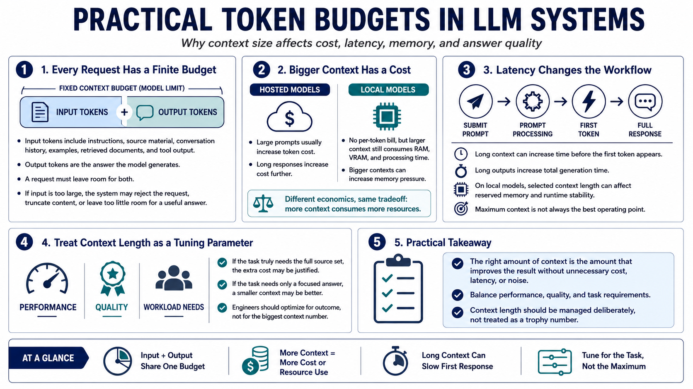

Tokens, Cost, Latency, and Memory
Connecting to LMS... Progress: in progress

Narration
Every model has practical token budgets. Input tokens include instructions, source material, conversation history, examples, retrieved documents, and tool outputs. Output tokens are the answer the model generates. A request has to leave room for both. If the input is too large, the system may reject the request, truncate material, or leave too little space for the response the user actually needs.
Hosted models often tie tokens to cost. Sending a large body of text may cost more than sending a focused prompt, and asking for a long response increases the total further. Local models have different economics, but they still pay in RAM, VRAM, and processing time. Large contexts can increase prompt processing time and memory pressure even when there is no per-token bill.
Latency matters because long context changes the feel of a workflow. A model may take longer to read the prompt before generating the first token. Generation time may also increase if the requested output is long. For local models, the selected context length can affect how much memory is reserved and how stable the runtime feels. Maximum context is not always the best operating point.
Good context management balances performance, quality, and workload needs. If the task requires a full source set, the extra cost may be justified. If the task needs only a focused answer, a smaller context may be better. Engineers should treat context length as a tuning parameter, not a trophy number. The right amount of context is the amount that improves the outcome without unnecessary cost, latency, or noise.